#001 · PHYSICAL
Media page
Round button 1
⏱ Video: 00:00:34–00:01:05
🔍 Compare Walkthrough Crop

168 Purpose-Built Vector SVGs: Touch (256×256), Dial (120×180), Physical (320×160). Click on any card to view and compare against original walkthrough video crops.
#001 · PHYSICAL
Round button 1
⏱ Video: 00:00:34–00:01:05

#002 · PHYSICAL
Round button 2
⏱ Video: 00:00:34–00:01:05

#003 · PHYSICAL
Round button 3
⏱ Video: 00:00:34–00:01:05


#004 · PHYSICAL
Round button 4
⏱ Video: 00:00:34–00:01:05

#005 · PHYSICAL
Round button 5
⏱ Video: 00:00:34–00:01:05

#006 · PHYSICAL
Round button 6
⏱ Video: 00:00:34–00:01:05


#007 · PHYSICAL
Round button 7
⏱ Video: 00:00:34–00:01:05

#008 · PHYSICAL
Round button 8
⏱ Video: 00:00:34–00:01:05


#009 · TOUCH
Touch 1 · top-left
⏱ Video: 00:02:04–00:02:21


#010 · TOUCH
Touch 2 · top row
⏱ Video: 00:01:50–00:02:02


#011 · TOUCH
Touch 3 · top row
⏱ Video: 00:02:33–00:02:44
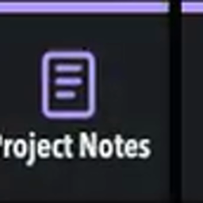

#012 · TOUCH
Touch 4 · top-right
⏱ Video: 00:02:44–00:02:51
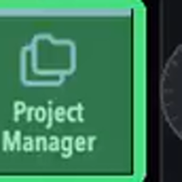

#013 · TOUCH
Touch 5 · middle-left
⏱ Video: 00:03:01–00:03:10


#014 · TOUCH
Touch 6 · middle row
⏱ Video: 00:03:10–00:03:15


#015 · TOUCH
Touch 7 · middle row
⏱ Video: 00:01:35–00:01:50
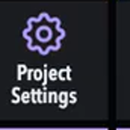

#016 · TOUCH
Touch 8 · middle-right
⏱ Video: 00:02:51–00:02:57


#017 · TOUCH
Touch 9 · bottom-left
⏱ Video: 00:02:21–00:02:33
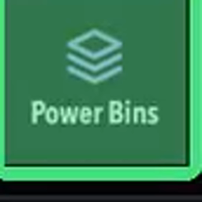

#018 · TOUCH
Touch 10 · bottom row
⏱ Video: 00:03:15–00:03:29; 00:21:03–00:21:14
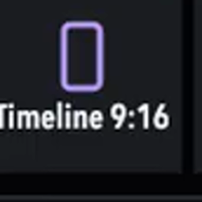

#019 · TOUCH
Touch 11 · bottom row
⏱ Video: 00:03:15–00:03:29; 00:21:14–00:21:19


#020 · TOUCH
Touch 12 · bottom-right
⏱ Video: 00:03:15–00:03:29; 00:21:19–00:21:24
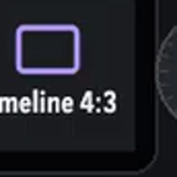

#021 · PHYSICAL
Alternate bottom row
⏱ Video: 00:03:31–00:03:36
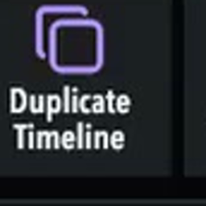

#022 · PHYSICAL
Alternate bottom row
⏱ Video: 00:03:31–00:03:36


#023 · TOUCH
Timer touch 1
⏱ Video: 00:03:45–00:03:56


#024 · TOUCH
Timer touch 2
⏱ Video: 00:03:36–00:04:06


#025 · TOUCH
Timer touch 3
⏱ Video: 00:03:36–00:04:06


#026 · TOUCH
Timer touch 4
⏱ Video: 00:03:36–00:04:06


#027 · TOUCH
Timer touch 5
⏱ Video: 00:03:36–00:04:06


#028 · TOUCH
Timer touch 6
⏱ Video: 00:03:36–00:04:06
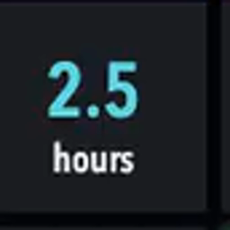

#029 · TOUCH
Timer touch 7
⏱ Video: 00:03:36–00:04:06


#030 · TOUCH
Timer touch 8
⏱ Video: 00:03:36–00:04:06
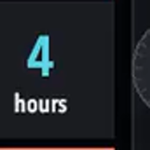

#031 · TOUCH
Timer touch 9
⏱ Video: 00:04:01–00:04:06
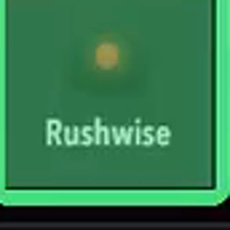

#032 · TOUCH
Timer touch 10
⏱ Video: 00:15:08–00:15:29


#033 · TOUCH
Timer touch 11
⏱ Video: 00:03:45–00:03:56


#034 · TOUCH
Timer touch 12
⏱ Video: 00:03:59–00:04:01
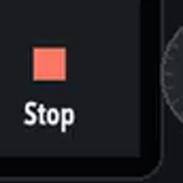

#035 · TOUCH
Touch 1 · top-left
⏱ Video: 00:07:06–00:07:20


#036 · TOUCH
Touch 2 · top row
⏱ Video: 00:07:06–00:07:16
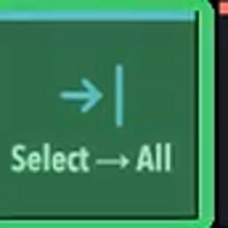

#037 · TOUCH
Touch 3 · top row
⏱ Video: 00:07:20–00:07:42
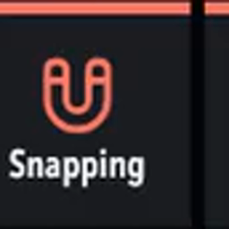

#038 · TOUCH
Touch 4 · top-right
⏱ Video: 00:06:41–00:06:51


#039 · TOUCH
Touch 5 · middle-left
⏱ Video: 00:06:51–00:07:03


#040 · TOUCH
Touch 6 · middle row
⏱ Video: 00:06:51–00:07:03


#041 · TOUCH
Touch 7 · middle row
⏱ Video: 00:07:57–00:08:03

#042 · TOUCH
Touch 8 · middle-right
⏱ Video: 00:07:42–00:07:57


#043 · TOUCH
Touch 9 · bottom-left
⏱ Video: 00:06:07–00:06:21


#044 · TOUCH
Touch 10 · bottom row
⏱ Video: 00:06:32–00:06:41
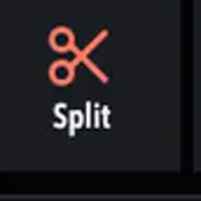

#045 · TOUCH
Touch 11 · bottom row
⏱ Video: 00:06:21–00:06:32


#046 · TOUCH
Touch 12 · bottom-right
⏱ Video: 00:05:31–00:05:40


#047 · DIAL
Top-left dial · turn
⏱ Video: 00:05:09–00:05:13


#048 · DIAL
Top-left dial · press
⏱ Video: 00:08:03–00:08:13
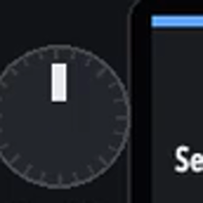

#049 · DIAL
Middle-left dial · turn
⏱ Video: 00:08:19–00:08:28


#050 · DIAL
Middle-left dial · press
⏱ Video: 00:08:13–00:08:16


#051 · DIAL
Bottom-left dial · turn
⏱ Video: 00:08:28–00:08:43
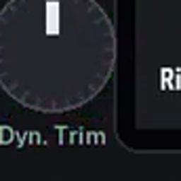

#052 · DIAL
Bottom-left dial · press
⏱ Video: 00:08:28–00:08:43


#053 · DIAL
Top-right dial · turn
⏱ Video: 00:05:13–00:05:18


#054 · DIAL
Top-right dial · press
⏱ Video: 00:08:16–00:08:19


#055 · DIAL
Middle-right dial · turn
⏱ Video: 00:05:22–00:05:25
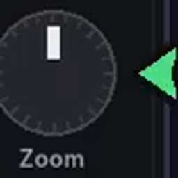

#056 · DIAL
Middle-right dial · press
⏱ Video: 00:04:44–00:04:52


#057 · DIAL
Bottom-right dial · turn
⏱ Video: 00:05:18–00:05:22
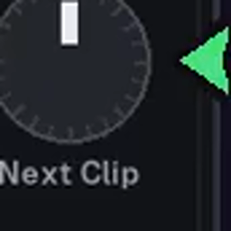

#058 · DIAL
Bottom-right dial · press
⏱ Video: 00:05:44–00:06:07
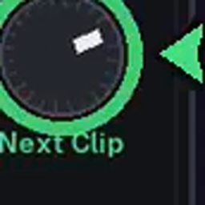

#059 · DIAL
Center wheel · turn
⏱ Video: 00:04:59–00:05:07


#060 · TOUCH
Center wheel · press
⏱ Video: 00:05:40–00:05:44
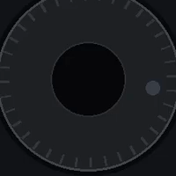

#061 · TOUCH
Touch 1 · top-left
⏱ Video: 00:08:49–00:09:00

#062 · TOUCH
Touch 2 · top row
⏱ Video: 00:09:00–00:09:15


#063 · TOUCH
Touch 3 · top row
⏱ Video: 00:09:15–00:09:50
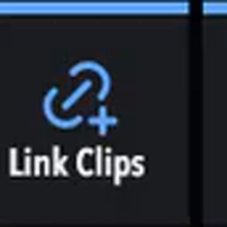

#064 · TOUCH
Touch 4 · top-right
⏱ Video: 00:09:51–00:10:06


#065 · TOUCH
Touch 5 · middle-left
⏱ Video: 00:10:06–00:10:16
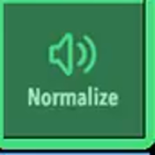

#066 · TOUCH
Touch 6 · middle row
⏱ Video: 00:10:16–00:10:28
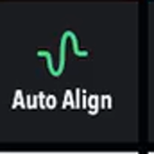

#067 · TOUCH
Touch 7 · middle row
⏱ Video: 00:10:28–00:10:34


#068 · TOUCH
Touch 8 · middle-right
⏱ Video: 00:10:28–00:10:34


#069 · TOUCH
Touch 9 · bottom-left
⏱ Video: 00:10:42–00:10:52


#070 · TOUCH
Touch 10 · bottom row
⏱ Video: 00:10:52–00:10:59


#071 · TOUCH
Touch 11 · bottom row
⏱ Video: 00:10:34–00:10:42
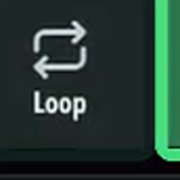

#072 · TOUCH
Touch 12 · bottom-right
⏱ Video: 00:05:31–00:05:40
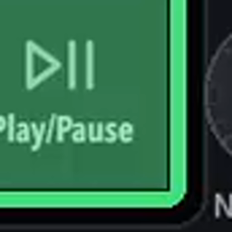

#073 · DIAL
Top-left dial · press
⏱ Video: 00:10:59–00:11:12
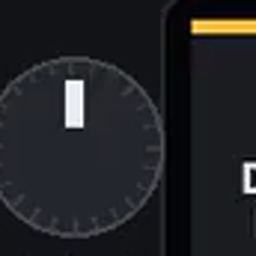

#074 · DIAL
Middle-left dial · press
⏱ Video: 00:10:59–00:11:12
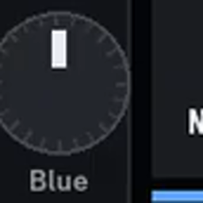

#075 · DIAL
Bottom-left dial · press
⏱ Video: 00:10:59–00:11:12
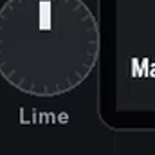

#076 · DIAL
Top-right dial · press
⏱ Video: 00:10:59–00:11:12
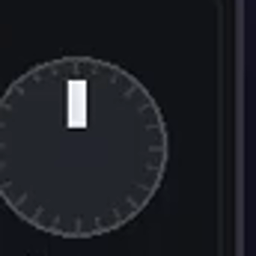

#077 · DIAL
Middle-right dial · press
⏱ Video: 00:10:59–00:11:12


#078 · DIAL
Bottom-right dial · press
⏱ Video: 00:10:59–00:11:12


#079 · TOUCH
Touch 1 · top-left
⏱ Video: 00:11:52–00:11:59
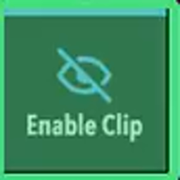

#080 · TOUCH
Touch 2 · top row
⏱ Video: 00:11:59–00:12:15
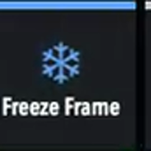

#081 · TOUCH
Touch 3 · top row
⏱ Video: 00:12:27–00:12:36


#082 · TOUCH
Touch 4 · top-right
⏱ Video: 00:11:20–00:11:43
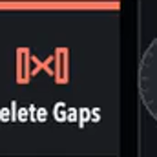

#083 · TOUCH
Touch 5 · middle-left
⏱ Video: 00:12:36–00:12:42

#084 · TOUCH
Touch 6 · middle row
⏱ Video: 00:12:15–00:12:27


#085 · TOUCH
Touch 7 · middle row
⏱ Video: 00:11:43–00:11:52
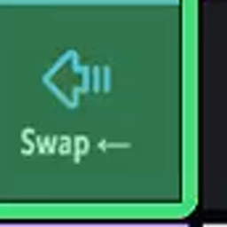

#086 · TOUCH
Touch 8 · middle-right
⏱ Video: 00:11:43–00:11:52


#087 · TOUCH
Touch 9 · bottom-left
⏱ Video: 00:12:41–00:12:46
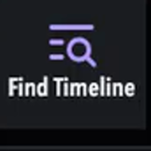

#088 · TOUCH
Touch 10 · bottom row
⏱ Video: 00:04:18–00:04:37; 00:12:46–00:12:50
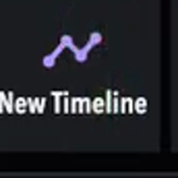

#089 · TOUCH
Touch 11 · bottom row
⏱ Video: 00:13:04–00:13:17


#090 · TOUCH
Touch 12 · bottom-right
⏱ Video: 00:05:31–00:05:40


#091 · DIAL
Top-left dial · press
⏱ Video: 00:12:50–00:13:04


#092 · DIAL
Middle-left dial · press
⏱ Video: 00:12:50–00:13:04
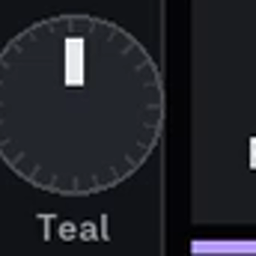

#093 · DIAL
Bottom-left dial · press
⏱ Video: 00:12:50–00:13:04


#094 · DIAL
Top-right dial · press
⏱ Video: 00:12:50–00:13:04


#095 · DIAL
Middle-right dial · press
⏱ Video: 00:12:50–00:13:04
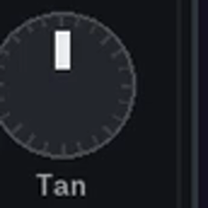

#096 · DIAL
Bottom-right dial · press
⏱ Video: 00:12:50–00:13:04
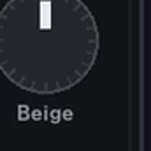

#097 · PHYSICAL
Undo
⏱ Video: 00:13:50–00:13:54


#098 · PHYSICAL
Save
⏱ Video: 00:13:54–00:14:00


#099 · PHYSICAL
Square A
⏱ Video: 00:14:00–00:14:06


#100 · PHYSICAL
Square B
⏱ Video: 00:14:00–00:14:06


#101 · PHYSICAL
Square C
⏱ Video: 00:05:25–00:05:31


#102 · PHYSICAL
Square D
⏱ Video: 00:05:25–00:05:31
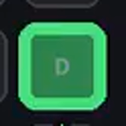

#103 · PHYSICAL
Square E
⏱ Video: 00:14:06–00:14:10


#104 · PHYSICAL
Fn + B
⏱ Video: 00:13:41–00:13:50
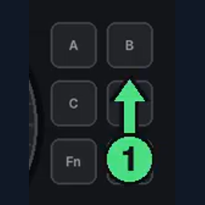

#105 · PHYSICAL
Fn + round 1
⏱ Video: 00:14:15–00:14:23
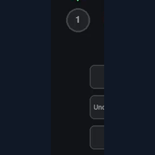

#106 · PHYSICAL
Fn + round 2
⏱ Video: 00:14:23–00:14:28


#107 · PHYSICAL
Fn + round 3
⏱ Video: 00:14:28–00:14:32
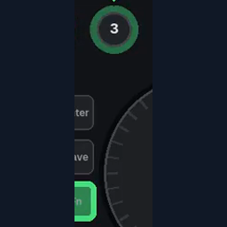

#108 · PHYSICAL
Fn + round 4
⏱ Video: 00:14:32–00:14:34
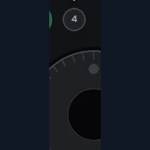

#109 · PHYSICAL
Fn + round 5
⏱ Video: 00:14:34–00:14:38


#110 · PHYSICAL
Fn + round 6
⏱ Video: 00:14:38–00:14:42


#111 · PHYSICAL
Fn + round 7
⏱ Video: 00:14:42–00:14:47
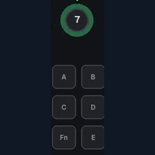

#112 · PHYSICAL
Fn + C
⏱ Video: 00:14:48–00:14:56


#113 · PHYSICAL
Fn + A
⏱ Video: 00:14:51–00:15:08
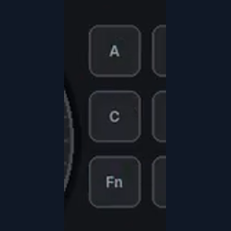

#114 · PHYSICAL
Fn + D
⏱ Video: 00:17:47–00:17:55


#115 · TOUCH
Touch 1 · top-left
⏱ Video: 00:15:40–00:15:48
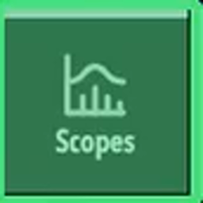

#116 · TOUCH
Touch 2 · top row
⏱ Video: 00:17:38–00:17:43


#117 · TOUCH
Touch 3 · top row
⏱ Video: 00:17:43–00:17:47
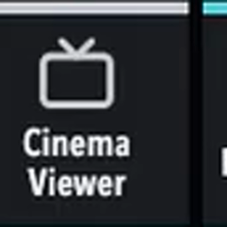

#118 · TOUCH
Touch 4 · top-right
⏱ Video: 00:16:45–00:17:01


#119 · TOUCH
Touch 5 · middle-left
⏱ Video: 00:15:52–00:15:57

#120 · TOUCH
Touch 6 · middle row
⏱ Video: 00:16:35–00:16:40
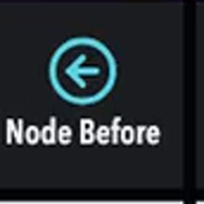

#121 · TOUCH
Touch 7 · middle row
⏱ Video: 00:16:40–00:16:45


#122 · TOUCH
Touch 8 · middle-right
⏱ Video: 00:17:01–00:17:07
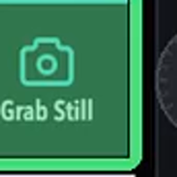

#123 · TOUCH
Touch 9 · bottom-left
⏱ Video: 00:17:22–00:17:28


#124 · TOUCH
Touch 10 · bottom row
⏱ Video: 00:17:28–00:17:33


#125 · TOUCH
Touch 11 · bottom row
⏱ Video: 00:17:12–00:17:18


#126 · TOUCH
Touch 12 · bottom-right
⏱ Video: 00:17:18–00:17:22
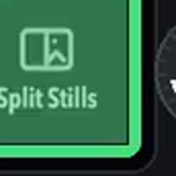

#127 · DIAL
Top-left dial · turn
⏱ Video: 00:16:02–00:16:26

#128 · DIAL
Top-left dial · press
⏱ Video: 00:16:30–00:16:35

#129 · DIAL
Middle-left dial · turn
⏱ Video: 00:16:30–00:16:35


#130 · DIAL
Middle-left dial · press
⏱ Video: 00:16:30–00:16:35


#131 · DIAL
Bottom-left dial · turn
⏱ Video: 00:16:26–00:16:30

#132 · DIAL
Bottom-left dial · press
⏱ Video: 00:16:30–00:16:35


#133 · DIAL
Top-right dial · turn
⏱ Video: 00:16:45–00:17:01

#134 · DIAL
Middle-right dial · turn
⏱ Video: 00:16:45–00:17:01


#135 · DIAL
Bottom-right dial · turn
⏱ Video: 00:16:45–00:17:01


#136 · DIAL
Top-right dial · press
⏱ Video: 00:17:33–00:17:38


#137 · TOUCH
Touch 1 · middle-left
⏱ Video: 00:18:08–00:18:19

#138 · TOUCH
Touch 2 · middle row
⏱ Video: 00:18:19–00:18:29

#139 · TOUCH
Touch 3 · bottom-left
⏱ Video: 00:18:39–00:18:48


#140 · TOUCH
Touch 4 · bottom row
⏱ Video: 00:18:39–00:18:48


#141 · TOUCH
Touch 5 · bottom row
⏱ Video: 00:18:39–00:18:48

#142 · TOUCH
Touch 6 · bottom-right
⏱ Video: 00:18:39–00:18:48

#143 · DIAL
Top-left dial · turn
⏱ Video: 00:18:48–00:18:57

#144 · DIAL
Middle-left dial · turn
⏱ Video: 00:18:29–00:18:34


#145 · DIAL
Bottom-left dial · turn
⏱ Video: 00:18:34–00:18:39

#146 · DIAL
Bottom-left dial · press
⏱ Video: 00:18:34–00:18:39


#147 · DIAL
Top-right dial · turn
⏱ Video: 00:18:48–00:18:57


#148 · DIAL
Middle-right dial · turn
⏱ Video: 00:18:48–00:18:57


#149 · DIAL
Bottom-right dial · turn
⏱ Video: 00:18:48–00:18:57


#150 · TOUCH
Touch 1 · top-left
⏱ Video: 00:19:06–00:19:13

#151 · TOUCH
Touch 2 · top row
⏱ Video: 00:19:10–00:19:16

#152 · TOUCH
Touch 3 · top row
⏱ Video: 00:19:10–00:19:16

#153 · TOUCH
Touch 4 · top-right
⏱ Video: 00:19:10–00:19:16

#154 · TOUCH
Touch 5 · middle-left
⏱ Video: 00:19:16–00:19:23


#155 · TOUCH
Touch 6 · middle row
⏱ Video: 00:19:23–00:19:54


#156 · TOUCH
Touch 7 · middle row
⏱ Video: 00:19:23–00:19:54

#157 · TOUCH
Touch 8 · middle-right
⏱ Video: 00:19:23–00:19:54

#158 · TOUCH
Touch 9 · bottom-left
⏱ Video: 00:19:54–00:19:59

#159 · TOUCH
Touch 10 · bottom row
⏱ Video: 00:19:59–00:20:03


#160 · TOUCH
Touch 11 · bottom row
⏱ Video: 00:20:03–00:20:09

#161 · TOUCH
Touch 12 · bottom-right
⏱ Video: 00:20:09–00:20:13


#162 · TOUCH
Swipe-right touch 1
⏱ Video: 00:20:13–00:20:21


#163 · TOUCH
Swipe-right touch 2
⏱ Video: 00:20:21–00:20:25


#164 · TOUCH
Swipe-right touch 3
⏱ Video: 00:20:25–00:20:27

#165 · DIAL
Top-left dial · press
⏱ Video: 00:20:27–00:20:35

#166 · DIAL
Top-right dial · press
⏱ Video: 00:20:27–00:20:35


#167 · PHYSICAL
Free edition Deliver
⏱ Video: 00:20:35–00:20:43

#168 · PHYSICAL
Round button 8
⏱ Video: 00:20:47–00:20:59